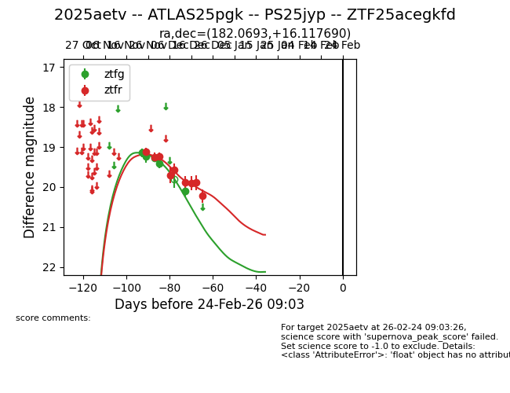
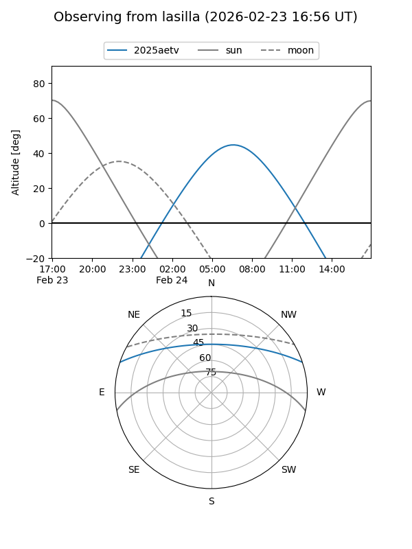
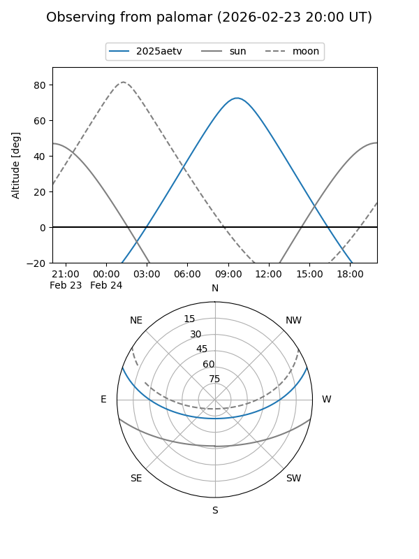

2025aetv
Target 2025aetv at 2025-12-29 19:54
Aliases and brokers:
FINK: fink-portal.org/ZTF25acegkfd
Lasair: lasair-ztf.lsst.ac.uk/objects/ZTF25acegkfd
ALeRCE: alerce.online/object/ZTF25acegkfd
TNS: wis-tns.org/object/2025aetv
YSE: ziggy.ucolick.org/yse/transient_detail/2025aetv
alt names
ZTF25acegkfd (ztf,fink_ztf)
2025aetv (tns,yse)
ATLAS25pgk (atlas)
PS25jyp (panstarrs)
Coordinates:
equatorial (ra, dec) = 182.0693,+16.11769
equatorial (HMS+DMS) = 12:08:16.64,+16:07:03.68
galactic (l, b) = (258.4670,+75.12207)
Flags:
Photometry:
last ztfg=20.10, ztfr=20.22
5 ztfg, 9 ztfr detections
Lightcurve

Visibility


Additional plots